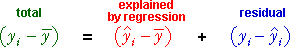
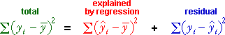
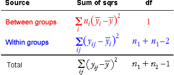

Sums of squares for GLMs
In any GLM, it is possible to write the difference between the response values and the overall mean as the sum of two components,

The sums of squares of these components satisfy a similar relationship.

Analysis of variance is based on these sums of squares and their relative sizes provide a useful summary of the proportion of the response variation that is explained by the model,

Notation
To further examine the explained and residual sums of squares for the 2-group model, a different notation is required. We use two subscripts for the response values, the first of these denotes the group (1 or 2) and the second denotes the observation within its group (1 to ni).
yij = the j'th of the ni response values in the i'th group
Sums of squares for the 2-group model
Since the fitted values of all observations in each group are all equal to the group mean, the formula for the explained sum of squares can be simplified. Since it depends on the squared differences between the group means and the overall mean, it is also called the between group sum of squares.
The residual sum of squares depends on the squared differences between each response value and its group mean, so it is also called the within group sum of squares.
Sum of squares table
Using this notation, the sum of squares table is:

Displaying the components
The diagram below shows a data set with two groups.
Use the pop-up menu to draw the three components on the jittered dot plot of the data.